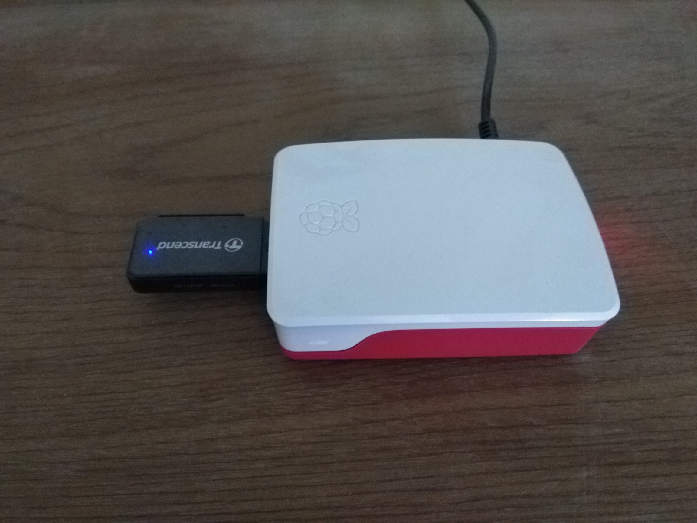

Quan Tong
Quan Tong
How do I build this blog?
2019-10-11

Recently, I decided to find a new job as a Golang developer. So, I updated my resume, sent to my friends to ask for review. Then I submitted it enclosed herewith a cover letter to recruiters. Some didn’t reply, and the other replied with a message like this “You are so good, but I’m so sorry…”.
What is the reason?
As you can see in my resume, I started my career as a .NET developer, then my passionate on Linux and open source lead me to a different direction: system administrator. I dedicated myself to this role for a significant period before transitioning back to work as a Golang developer 2 years ago.
I was looking around to see how can I write a software engineering resume and here’s what I found:
- https://www.freecodecamp.org/news/heres-the-resume-i-used-to-get-a-job-at-google-as-a-software-engineer-26516526f29a/
- https://www.freecodecamp.org/news/writing-a-killer-software-engineering-resume-b11c91ef699d/
An important section that I was missing is: Software Projects. So I decided to write my own blog to boost up my resume. Moreover, writing things down also give me an opportunity to truly understand what I’ve learned.
The main parts that I’m going to do:
- blog posts are wrote in markdown (metadata use YAML format)
- pagination
- create a master page by adding header, footer
- add commenting system
- Medium layout
- make it mobile friendly
Development
Parsing metadata and markdown
An example of metadata:
title: Resume
date: Mon Sep 30 20:43:10 +07 2019
description: My resume
tags:
- devops
- golang
- resume
A blog post struct:
type Post struct {
Title string
Date publishDate
Description string
Content template.HTML
Tags []string
File string
}
It can be parsed like this:
fileread, err := ioutil.ReadFile(f)
if err != nil {
return nil, errors.Wrap(err, "ioutil.ReadFile")
}
lines := strings.Split(string(fileread), "\n")
var closingMetadataLine int
for i := 1; i < len(lines); i++ {
if lines[i] == yamlDelim {
closingMetadataLine = i
}
}
metadata := strings.Join(lines[1:closingMetadataLine], "\n")
p := Post{}
if err := yaml.Unmarshal([]byte(metadata), &p); err != nil {
return nil, errors.Wrap(err, "yaml.Unmarshal")
}
and the content can be processed by using Blackfriday:
content := strings.Join(lines[closingMetadataLine+1:], "\n")
p.Content = template.HTML(bf.Run(
[]byte(content),
bf.WithRenderer(
bfchroma.NewRenderer(
bfchroma.WithoutAutodetect(),
bfchroma.ChromaOptions(html.WithLineNumbers()),
bfchroma.ChromaStyle(styles.SolarizedDark),
),
),
))
Pagination
Based on current page, a paginator template can be created as follows:
{{ define "paginator" }}
{{if .paginator.HasPages}}
<ul class="pagination pagination">
{{if .paginator.HasPrev}}
<li><a href="{{.paginator.PageLinkFirst}}">First</a></li>
<li><a href="{{.paginator.PageLinkPrev}}">«</a></li>
{{else}}
<li class="disabled"><a>First</a></li>
<li class="disabled"><a>«</a></li>
{{end}}
{{range $_, $page := .paginator.Pages}}
<li{{if $.paginator.IsActive .}} class="active"{{end}}>
<a href="{{$.paginator.PageLink $page}}">{{$page}}</a>
</li>
{{end}}
{{if .paginator.HasNext}}
<li><a href="{{.paginator.PageLinkNext}}">»</a></li>
<li><a href="{{.paginator.PageLinkLast}}">Last</a></li>
{{else}}
<li class="disabled"><a>»</a></li>
<li class="disabled"><a>Last</a></li>
{{end}}
</ul>
{{end}}
{{ end }}
then included in the home template:
{{ define "home" }}
{{ template "header" . }}
<h1>QuanTA's blog</h1>
{{ range .posts }}
<a href="/posts/{{ .File }}"><h2>{{ .Title }}</h2></a>
<p>{{ .Date | formatDate }}</p>
<p>Tags:
{{ range $_, $tag := .Tags }}
<a href="/tags/{{ $tag }}">#{{ $tag }}</a>
{{ end }}
</p>
<p>{{ .Description }}</p>
<hr>
{{ end }}
{{ template "paginator" . }}
{{ template "footer" . }}
{{ end }}
When executing home template, I need to pass both paginator and posts, so I used pongo2 context to do that:
nums := len(posts)
paginator := pagination.NewPaginator(r, postsPerPage, int64(nums))
offset := paginator.Offset()
endPos := offset + postsPerPage
if endPos > nums {
endPos = nums
}
data := pongo2.Context{"paginator": paginator, "posts": posts[offset:endPos]}
if err := templates.ExecuteTemplate(w, "home", data); err != nil {
log.Fatal(err)
}
Adding header, footer
Every pages should have the same header and footer. So, I added it follow this
Commenting system
Since I don’t have much experience with frontend, I decided to embed a commenting system instead of writing my own. Looking around and I found:
- https://fedidat.com/530-blog-comments/
- https://techroads.org/comparing-blog-comment-systems-with-privacy-features/
Tried both commento and remark42 and I choosed remark42 for some reasons:
- Login with only one click (instead of two in
commento: click on Login then chose Google, GitHub, …) - The editor has some basic icons: bold, italic, quote, code, link, image, …
I built my own docker image to run on Raspberry Pi 4:
remark42:
build: .
image: quantonganh/remark42:arm32
container_name: "remark42"
hostname: "remark42"
restart: always
environment:
- REMARK_URL=https://remark42.dynu.net
- SECRET=xx
- STORE_BOLT_PATH=/srv/var/db
- BACKUP_PATH=/srv/var/backup
- AUTH_GITHUB_CID=<client_id>
- AUTH_GITHUB_CSEC=<client_secret>
volumes:
- ./var:/srv/var
labels:
- traefik.enable=true
- traefik.http.routers.remark42.rule=Host(`remark42.dynu.net`)
- traefik.http.routers.remark42.entrypoints=https
- traefik.http.routers.remark42.tls.certresolver=le
- traefik.http.services.remark42.loadbalancer.server.port=8080
In the frontend side, I just need to something like this at the end of post template:
<script>
var remark_config = {
host: "https://remark42.dynu.net",
site_id: 'remark',
components: ['embed'],
url: 'https://quanta.dynu.net/posts/{{ .File }}',
Make sure that host is matched with REMARK_URL environment variable and url is the URL of a specifi blog post.
Medium layout
https://www.freecodecamp.org/news/how-to-recreate-mediums-article-layout-with-css-grid-b4608792bad1/
Mobile friendly
https://www.thesitewizard.com/css/mobile-friendly-responsive-design.shtml
Continuous Integration
gitea:
image: quantonganh/gitea:1.9.4-arm32v6
container_name: gitea
restart: always
volumes:
- gitea:/data
ports:
- "222:22"
environment:
- DISABLE_REGISTRATION=true
labels:
- traefik.enable=true
- traefik.http.services.gitea.loadbalancer.server.port=3000
- traefik.http.routers.gitea.rule=Host(`git-tea.dynu.net`)
- traefik.http.routers.gitea.entrypoints=http
- traefik.http.routers.gitea.middlewares=https-redirect@file
- traefik.http.routers.gitea-secured.rule=Host(`git-tea.dynu.net`)
- traefik.http.routers.gitea-secured.entrypoints=https
- traefik.http.routers.gitea-secured.tls=true
- traefik.http.routers.gitea-secured.tls.certresolver=le
drone:
image: drone/drone:1-linux-arm
container_name: drone
restart: always
volumes:
- drone:/data
environment:
- DRONE_AGENTS_ENABLED=true
- DRONE_GITEA_SERVER=https://git-tea.dynu.net
- DRONE_GITEA_CLIENT_ID=<client_id>
- DRONE_GITEA_CLIENT_SECRET=<client_secret>
- DRONE_RPC_SECRET=<rpc_secret>
- DRONE_SERVER_PROTO=https
- DRONE_SERVER_HOST=drone-ci.dynu.net
- DRONE_USER_CREATE=username:quanta,admin:true
labels:
- traefik.enable=true
- traefik.http.services.drone.loadbalancer.server.port=80
- traefik.http.routers.drone.rule=Host(`drone-ci.dynu.net`)
- traefik.http.routers.drone.entrypoints=http
- traefik.http.routers.drone.middlewares=https-redirect@file
- traefik.http.routers.drone-secured.rule=Host(`drone-ci.dynu.net`)
- traefik.http.routers.drone-secured.entrypoints=https
- traefik.http.routers.drone-secured.tls=true
- traefik.http.routers.drone-secured.tls.certresolver=le
https-redirect middleware is configured like this:
http:
middlewares:
https-redirect:
redirectScheme:
scheme: https
Deploy
Dockerfile is so simple:
FROM arm32v7/alpine:3.10
RUN mkdir /app
COPY assets /app/assets
COPY favicon.ico /app
COPY posts /app/posts
COPY templates/ /app/templates
COPY blog /app
WORKDIR /app
ENTRYPOINT [ "/app/blog" ]
EXPOSE 80
If you have a local docker registry, you can use docker plugin to push it to. Otherwise, you can build and make it avaiable to the host by something like this:
- name: build-docker
image: quantonganh/docker:19.03.3-rc1-armv7
commands:
- docker build -t quantonganh/blog:${DRONE_SOURCE_BRANCH} .
volumes:
- name: docker
path: /var/run/docker.sock
Categories: Programming
Tags: golang